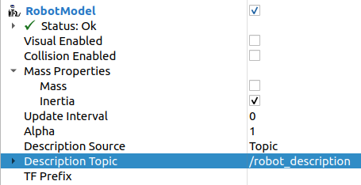

Humble Hawksbill (humble)
Table of Contents
Humble Hawksbill is the eighth release of ROS 2. What follows is highlights of the important changes and features in Humble Hawksbill since the last release. For a list of all of the changes since Galactic, see the long form changelog.
Supported Platforms
Humble Hawksbill is primarily supported on the following platforms:
Tier 1 platforms:
Ubuntu 22.04 (Jammy):
amd64andarm64Windows 10 (Visual Studio 2019):
amd64
Tier 2 platforms:
RHEL 8:
amd64
Tier 3 platforms:
Ubuntu 20.04 (Focal):
amd64macOS:
amd64Debian Bullseye:
amd64
For more information about RMW implementations, compiler / interpreter versions, and system dependency versions see REP 2000.
Changes in Patch Release 1 (2022-11-23)
ros2topic
now as keyword for builtin_interfaces.msg.Time and auto for std_msgs.msg.Header
ros2 topic pub now allows to set a builtin_interfaces.msg.Time message to the current time via the now keyword.
Similarly, a std_msg.msg.Header message will be automatically generated when passed the keyword auto.
This behavior matches that of ROS 1’s rostopic (http://wiki.ros.org/ROS/YAMLCommandLine#Headers.2Ftimestamps)
Related PR: ros2/ros2cli#751
Changes since the Galactic release
ament_cmake_gen_version_h
Generating a C/C++ header with version info
A new CMake function to generate a header with the package version info was added to the ament_cmake_gen_version_h in ament/ament_cmake#377.
Here’s the simplest use case:
project(my_project)
add_library(my_lib ...)
ament_generate_version_header(my_lib)
It will generate a header with version info from the package.xml and make it available to targets that link against the my_lib library.
How to include the header:
#include <my_project/version.h>
Where the header is installed to:
set(VERSION_HEADER ${CMAKE_INSTALL_PREFIX}/include/my_project/my_project/version.h)
launch
Scoping environment variables in group actions
Similar to launch configurations, now by default, the state of environment variables are scoped to group actions.
For example, in the following launch files the executed processe will echo the value 1 (before Humble it would echo 2):
<launch>
<set_env name="FOO" value="1" />
<group>
<set_env name="FOO" value="2" />
</group>
<executable cmd="echo $FOO" output="screen" shell="true" />
</launch>
import launch
import launch.actions
def generate_launch_description():
return launch.LaunchDescription([
launch.actions.SetEnvironmentVariable(name='FOO', value='1'),
launch.actions.GroupAction([
launch.actions.SetEnvironmentVariable(name='FOO', value='2'),
]),
launch.actions.ExecuteProcess(cmd=['echo', '$FOO'], output='screen', shell=True),
])
If you would like disable scoping for launch configurations and and environment variables you can set the scoped argument (or attribute) to false.
Related PR: ros2/launch#601
launch_pytest
We’ve added a new package, launch_pytest, that acts as an alternative to launch_testing.
launch_pytest is a simple pytest plugin that provides pytest fixtures to manage the lifetime of a launch service.
Check out the package README for details and examples.
Related PR: ros2/launch#528
Allow matching target actions with a callable
Event handlers that take a target action object to match can now also take a callable instead to do the matching.
Related PR: ros2/launch#540
Access to math module when evaluating Python expressions
Inside PythonExpression substitutions (eval) we can now use symbols from Python’s math module.
For example,
<launch>
<log message="$(eval 'ceil(pi)')" />
</launch>
Related PR: ros2/launch#557
Boolean substitutions
New substitutions NotSubstitution, AndSubstitution, and OrSubstitution provide a convenient way to perform logical operations, for example
<launch>
<let name="p" value="true" />
<let name="q" value="false" />
<group if="$(or $(var p) $(var q))">
<log message="The first condition is true" />
</group>
<group unless="$(and $(var p) $(var q))">
<log message="The second condition is false" />
</group>
<group if="$(not $(var q))">
<log message="The third condition is true" />
</group>
</launch>
Related PR: ros2/launch#598
New actions
AppendEnvironmentVariableappends a value to an existing environment variable.Related PR: ros2/launch#543
ResetLaunchConfigurationsresets any configuration applied to the launch configuration.Related PR: ros2/launch#515
launch_ros
Passing ROS arguments to node actions
It is now possible to provide ROS-specific node arguments directly, without needing to use args with a leading --ros-args flag:
<launch>
<node pkg="demo_nodes_cpp" exec="talker" ros_args="--log-level debug" />
</launch>
launch:
- node:
pkg: demo_nodes_cpp
exec: talker
ros_args: '--log-level debug'
The corresponding parameter for the Node action in Python launch files is ros_arguments:
from launch import LaunchDescription
import launch_ros.actions
def generate_launch_description():
return LaunchDescription([
launch_ros.actions.Node(
package='demo_nodes_cpp',
executable='talker',
ros_arguments=['--log-level', 'debug'],
),
])
Related PRs: ros2/launch_ros#249 and ros2/launch_ros#253.
Frontend support for composable nodes
We can now start node containers and load components into them from frontend launch files, for example:
<launch>
<node_container pkg="rclcpp_components" exec="component_container" name="my_container" namespace="">
<composable_node pkg="composition" plugin="composition::Talker" name="talker" />
</node_container>
<load_composable_node target="my_container">
<composable_node pkg="composition" plugin="composition::Listener" name="listener" />
</load_composable_node>
</launch>
launch:
- node_container:
pkg: rclcpp_components
exec: component_container
name: my_container
namespace: ''
composable_node:
- pkg: composition
plugin: composition::Talker
name: talker
- load_composable_node:
target: my_container
composable_node:
- pkg: composition
plugin: composition::Listener
name: listener
Related PR: ros2/launch_ros#235
Parameter substitution
The new ParameterSubstitution lets you substitute the value of a parameter set previously in launch with the SetParameter action.
For example,
<launch>
<set_parameter name="foo" value="bar" />
<log message="Parameter foo has value $(param foo)" />
</launch>
Related PR: ros2/launch_ros#297
New actions
RosTimeracts like the launchTimerAction, but uses a ROS clock (so it can use simulation time, for example).Related PRs: ros2/launch_ros#244 and ros2/launch_ros#264
SetParametersFromFilepasses a ROS parameters file to all nodes in a launch file (including node components).Related PRs: ros2/launch_ros#260 and ros2/launch_ros#281
SROS2 Security enclaves now support Certificate Revocation Lists
Certificate Revocation Lists (CRLs) are a concept where particular certificates can be revoked before their expiration. As of Humble, it is now possible to put a CRL in an SROS2 security enclave and have it be honored. See the SROS2 tutorials for an example of how to use it.
Content Filtered Topics
Content Filtered Topics supports a more sophisticated subscription that indicates the subscriber does not want to necessarily see all values of each instance published under the Topic. Content Filtered Topics can be used to request content-based subscriptions when underlying RMW implementation supports this feature.
rmw_fastrtps |
supported |
rmw_connextdds |
supported |
rmw_cyclonedds |
not supported |
To learn more, see the content_filtering examples.
Related design PR: ros2/design#282.
ros2cli
ros2 launch has a --launch-prefix argument
This allows passing a prefix to all executables in a launch file, which is useful in many debugging situations. See the associated pull request, as well as the tutorial for more information.
Relatedly, the --launch-prefix-filter command-line option was added to selectively add the prefix from --launch-prefix to executables.
See the pull request for more information.
ros2 topic echo has a --flow-style argument
This allows the user to force flow style for the YAML representation of data on a topic.
Without this option, the output from ros2 topic echo /tf_static could look something like:
transforms:
- header:
stamp:
sec: 1651172841
nanosec: 433705575
frame_id: single_rrbot_link3
child_frame_id: single_rrbot_camera_link
transform:
translation:
x: 0.05
y: 0.0
z: 0.9
rotation:
x: 0.0
y: 0.0
z: 0.0
w: 1.0
With this option, the output would look something like:
transforms: [{header: {stamp: {sec: 1651172841, nanosec: 433705575}, frame_id: single_rrbot_link3}, child_frame_id: single_rrbot_camera_link, transform: {translation: {x: 0.05, y: 0.0, z: 0.9}, rotation: {x: 0.0, y: 0.0, z: 0.0, w: 1.0}}}]
See the PyYAML documentation for more information.
ros2 topic echo can filter data based on message contents
This allows the user to only print out data on a topic that matches a certain Python expression. For instance, using the following argument will only print out string messages that start with ‘foo’:
ros2 topic echo --filter 'm.data.startswith("foo")` /chatter
See the pull request for more information.
rviz2
Apply textures to arbitrary triangle lists
We’ve added the ability to apply textures defined via URI to arbitrary triangle lists using UV Coordinates.
Now we can create a gradient pull from a texture map instead of the default grayscale.
This will enable complex coloring of markers.
To use this, you should use the visualization_msgs/Marker.msg and fill the texture_resource, texture, uv_coordinates and mesh_file fields.
You can find more information here.
Visualization of mass properties (including inertia)
We also added the ability to visualize inertias. To do this, you select enable ‘Inertia’ in the ‘Mass Properties’ under the robot model:
You can see an image of an inertia below.

Visualize YUV images in RViz
It is now possible to directly visualize YUV images inside of RViz, rather than having to convert to RGB first. See ros2/rviz#701 for details.
Allow rendering of objects > 100 meters
By default, RViz only renders objects that are within 100 meters of a camera. A new configuration property called “Far Plane Distance” in the rviz camera plugin allows that rendering distance to be configured.

See ros2/rviz#849 for more information.
Changes since the Galactic release
common_interfaces
Support Textures and Embedded Meshes for Marker Messages
These two additions will improve the ability to both visualize data in new ways with standard messages and, simultaneously, enable the ability to track this data in rosbag.
Textures bring the addition of three new fields to markers:
# Texture resource is a special URI that can either reference a texture file in
# a format acceptable to (resource retriever)[https://index.ros.org/p/resource_retriever/]
# or an embedded texture via a string matching the format:
# "embedded://texture_name"
string texture_resource
# An image to be loaded into the rendering engine as the texture for this marker.
# This will be used iff texture_resource is set to embedded.
sensor_msgs/CompressedImage texture
# Location of each vertex within the texture; in the range: [0.0-1.0]
UVCoordinate[] uv_coordinates
RViz will fully support texture rendering through the embedded format.
To those familiar with mesh_resource, resource_retriever should be familiar.
This will allow the programmer to choose where they want to load data from, either a local file or a networked file.
In the interest of being able to record all data in a rosbag, the ability to embed the texture image is included.
Meshes were modified in a similar way to add the ability to embed a raw Mesh file for the purpose of recording and are modified in a similar way. The Meshfile message has two fields:
# The filename is used for both debug purposes and to provide a file extension
# for whatever parser is used.
string filename
# This stores the raw text of the mesh file.
uint8[] data
The embedded Meshfile message is not yet supported in implementation.
Related PRs: ros2/common_interfaces#153 ros2/rviz#719
Added PRISM type to SolidPrimitive
The SolidPrimitive message had a new PRISM type added, along with the appropriate metadata.
See ros2/common_interfaces#167 for more information.
rmw
struct type name suffix changed from _t to _s
To avoid type name duplication errors between struct type names and their typedef-ed aliases when generating code documentation, the suffix for all struct type names has been changed from _t to _s.
Aliases with _t suffixes remain in place.
Thus, this change is a breaking change only for code that uses full struct type specifiers i.e. struct type_name_t.
See ros2/rmw#313 for more details.
rmw_connextdds
Use Connext 6 by default
By default, Humble Hawksbill uses Connext 6.0.1 as the DDS implementation for rmw_connextdds.
It is still possible to use Connext 5.3.1 with rmw_connextdds, but it must be rebuilt from source.
rcl
struct type name suffix changed from _t to _s
To avoid type name duplication errors between struct type names and their typedef-ed aliases when generating code documentation, the suffix for all struct type names has been changed from _t to _s.
Aliases with _t suffixes remain in place.
Thus, this change is a breaking change only for code that uses full struct type specifiers i.e. struct type_name_t.
See ros2/rcl#932 for more details.
ROS_DISABLE_LOANED_MESSAGES environment variable added
This environment variable can be used to disable loaned messages support, independently if the rmw supports them or not. For more details, see the guide Disabling Zero Copy Loaned Messages.
rclcpp
Support Type Adaption for Publishers and Subscriptions
After defining a type adapter, custom data structures can be used directly by publishers and subscribers, which helps to avoid additional work for the programmer and potential sources of errors.
This is especially useful when working with complex data types, such as when converting OpenCV’s cv::Mat to ROS’s sensor_msgs/msg/Image type.
Here is an example of a type adapter that converts std_msgs::msg::String to std::string:
template<>
struct rclcpp::TypeAdapter<
std::string,
std_msgs::msg::String
>
{
using is_specialized = std::true_type;
using custom_type = std::string;
using ros_message_type = std_msgs::msg::String;
static
void
convert_to_ros_message(
const custom_type & source,
ros_message_type & destination)
{
destination.data = source;
}
static
void
convert_to_custom(
const ros_message_type & source,
custom_type & destination)
{
destination = source.data;
}
};
And an example of how the type adapter can be used:
using MyAdaptedType = TypeAdapter<std::string, std_msgs::msg::String>;
// Publish a std::string
auto pub = node->create_publisher<MyAdaptedType>(...);
std::string custom_msg = "My std::string"
pub->publish(custom_msg);
// Pass a std::string to a subscription's callback
auto sub = node->create_subscription<MyAdaptedType>(
"topic",
10,
[](const std::string & msg) {...});
To learn more, see the publisher and subscription examples, as well as a more complex demo. For more details, see REP 2007.
wait_for_all_acked method added to Publisher
This new method will block until all messages in the publisher queue are acked by the matching subscriptions or the specified timeout expires. It is only useful for reliable publishers, as in the case of best effort QoS there’s no acking. Examples:
auto pub = node->create_publisher<std_msgs::msg::String>(...);
...
pub->publish(my_msg);
...
pub->wait_for_all_acked(); // or pub->wait_for_all_acked(timeout)
For a more complete example, see here.
get_callback_groups method removed from NodeBase and Node classes
for_each_callback_group() method has replaced get_callback_groups() by providing a thread-safe way to access callback_groups_ vector.
for_each_callback_group() accepts a function as an argument, iterates over the stored callback groups, and calls the passed function to ones that are valid.
For more details, please refer to this pull request.
add_to_wait_set method from Waitable class changes its return type from bool to void
Before, classes derived from Waitable overriding add_to_wait_set were returning false when failing to add elements to the wait set, so the caller had to check this return value and throw or handle the error.
This error handling should now be done directly on add_to_wait_set method, throwing if necessary.
It is not required to return anything if no errors happened.
Thus, this is a breaking change for downstream uses of Waitable.
See ros2/rclcpp#1612 for more details.
get_notify_guard_condition method return type from NodeBaseInterface class changed
Now rclcpp uses the GuardCondition class wrapper around rcl_guard_condition_t, so get_notify_guard_condition returns a reference to the node’s rclcpp::GuardCondition.
Thus, this is a breaking change for downstream uses of NodeBaseInterface and NodeBase.
See ros2/rclcpp#1612 for more details.
sleep_until and sleep_for methods added to Clock
Two new methods were added to allow sleeping on a particular clock in ros2/rclcpp#1814 and ros2/rclcpp#1828.
Clock::sleep_until will suspend the current thread until the clock reaches a particular time.
Clock::sleep_for will suspend the current thread until the clock advances a certain amount of time from when the method was called.
Both methods will wake early if the Context is shutdown.
rclcpp_lifecycle
Active and deactivate transitions of publishers will be triggered automatically
Before, users needed to override LifecylceNode::on_activate() and LifecylceNode::on_deactivate() and call the similarly named methods on LifecyclePublisher to make the transition actually happen.
Now, LifecylceNode provides a default interface of these methods that already do this.
See the implementation of the lifecycle_talker node here.
rclpy
wait_for_all_acked method added to Publisher
Similar to the feature added to rclcpp.
sleep_until and sleep_for methods added to Clock
Two new methods were added to allow sleeping on a particular clock in ros2/rclpy#858 and ros2/rclpy#864.
sleep_until will suspend the current thread until the clock reaches a particular time.
sleep_for will suspend the current thread until the clock advances a certain amount of time from when the method was called.
Both methods will wake early if the Context is shutdown.
ros1_bridge
Since there is no official ROS 1 distribution on Ubuntu Jammy and forward, ros1_bridge is now compatible with the Ubuntu-packaged versions of ROS 1.
More details about using ros1_bridge with Jammy packages are available in the how-to guides.
ros2cli
ros2 commands disable output buffering by default
Prior to this release, running a command like
ros2 echo /chatter | grep "Hello"
would not print any data until the output buffer was full.
Users could work around this by setting PYTHONUNBUFFERED=1, but that was not very user friendly.
Instead, all ros2 commands now do line-buffering by default, so commands like the above work as soon as a newline is printed.
To disable this behavior and use default python buffering rules, use the option --use-python-default-buffering.
See the original issue and the pull request for more information.
ros2 topic pub will wait for one matching subscription when using --times/--once/-1
When using --times/--once/-1 flags, ros2 topic pub will wait for one matching subscription to be found before starting to publish.
This avoids the issue of the ros2cli node starting to publish before discovering a matching subscription, which results in some of the first messages being lost.
This is particularly unexpected when using a reliable qos profile.
The number of matching subscriptions to wait before starting publishing can be configured with the -w/--wait-matching-subscriptions flags, e.g.:
ros2 topic pub -1 -w 3 /chatter std_msgs/msg/String "{data: 'foo'}"
to wait for three matching subscriptions before starting to publish.
-w can also be used independently of --times/--once/-1 but it only defaults to one when combined with them, otherwise the -w default is zero.
See https://github.com/ros2/ros2cli/pull/642 for more details.
ros2 param dump default output changed
It prints to stdout by default:
ros2 param dump /my_node_name
--output-diroption for dump command was deprecated.To dump parameters to a file, run:
ros2 param dump /my_node_name > my_node_name.yaml
ros2 param set now accepts more YAML syntax
Previously, attempting to set a string like “off” to a parameter that was of string type did not work.
That’s because ros2 param set interprets the command-line arguments as YAML, and YAML considers “off” to be a boolean type.
As of https://github.com/ros2/ros2cli/pull/684 , ros2 param set now accepts the YAML escape sequence of “!!str off” to ensure that the value is considered a string.
ros2 pkg create can automatically generate a LICENSE file
If the --license flag is passed to ros2 pkg create, and the license is one of the known licenses, ros2 pkg create will now automatically generate a LICENSE file in the root of the package.
For a list of known licenses, run ros2 pkg create --license ? <package_name>.
See the associated pull request for more information.
robot_state_publisher
Added frame_prefix parameter
A new parameter frame_prefix was added in ros/robot_state_publisher#159.
This parameter is a string which is prepended to all frame names published by robot_state_publisher.
Similar to tf_prefix in the original tf library in ROS 1, this parameter can be used to publish the same robot description multiple times with different frame names.
Removal of deprecated use_tf_static parameter
The deprecated use_tf_static parameter has been removed from robot_state_publisher.
This means that static transforms are unconditionally published to the /tf_static topic, and that the static transforms are published in a transient_local Quality of Service.
This was the default behavior, and the behavior which the tf2_ros::TransformListener class expected before, so most code will not have to be changed.
Any code that was relying on robot_state_publisher to periodically publish static transforms to /tf will have to be updated to subscribe to /tf_static as a transient_local subscription instead.
rosidl_cmake
Deprecation of rosidl_target_interfaces()
The CMake function rosidl_target_interfaces() has been deprecated, and now issues a CMake warning when called.
Users wanting to use messages/services/actions in the same ROS package that generated them should instead call rosidl_get_typesupport_target() and then target_link_libraries() to make their targets depend on the returned typesupport target.
See https://github.com/ros2/rosidl/pull/606 for more details, and https://github.com/ros2/demos/pull/529 for an example of using the new function.
geometry2
Deprecation of TF2Error::NO_ERROR, etc
The tf2 library uses an enumeration called TF2Error to return errors.
Unfortunately, one of the enumerators in there is called NO_ERROR, which conflicts with a macro on Windows.
To remedy this, a new set of enumerators in TF2Error were created, each with a TF2 prefix.
The previous enumerators are still available, but are now deprecated and will print a deprecation warning if used.
All code that uses the TF2Error enumerator should be updated to use the new TF2 prefixed errors.
See https://github.com/ros2/geometry2/pull/349 for more details.
More intuitive command-line arguments for static_transform_publisher
The static_transform_publisher program used to take arguments like: ros2 run tf2_ros static_transform_publisher 0 0 0 0 0 0 1 foo bar.
The first three numbers are the translation x, y, and z, the next 4 are the quaternion x, y, z, and w, and the last two arguments are the parent and child frame IDs.
While this worked, it had a couple of problems:
The user had to specify all of the arguments, even if only setting one number
Reading the command-line to figure out what it was publishing was tricky
To fix both of these issues, the command-line handling has been changed to use flags instead, and all flags except for --frame-id and --child-frame-id are optional.
Thus, the above command-line can be simplified to: ros2 run tf2_ros static_transform_publisher --frame-id foo --child-frame-id bar
To change just the translation x, the command-line would be: ros2 run tf2_ros static_transform_publisher --x 1.5 --frame-id foo --child-frame-id bar.
The old-style arguments are still allowed in this release, but are deprecated and will print a warning. They will be removed in future releases. See https://github.com/ros2/geometry2/pull/392 for more details.
Transform listener spin thread no longer executes node callbacks
tf2_ros::TransformListener no longer spins on the provided node object.
Instead, it creates a callback group to execute callbacks on the entities it creates internally.
This means if you have set the parameter spin_thread=true when creating a transform listener, you
can no longer depend on your own callbacks to be executed.
You must call a spin function on your node (e.g. rclcpp::spin), or add your node to your own executor.
Related pull request: geometry2#442
rosbag2
New playback and recording controls
Several pull requests have been added to enhance the user’s control over playback of bags. Pull request 931 adds the ability to specify a time stamp to begin playing from. Due to pull request 789 it is now possible to delay the start of playback by a specified interval.
Relatedly, rosbag2 has gained new ways for users to control playback as it is happening.
Pull request 847 adds keyboard controls for pausing, resuming, and playing the next message during playback from a terminal.
It is also possible to start playback paused thanks to pull requests 905 and 904, which makes it easy for the user to initiate playback and then step through messages, such as when debugging a pipeline.
Pull request 836 adds an interface for seeking within bags, allowing the user to move around within a bag during playback.
Finally, a new snapshot mode has been added to recording in pull request 851. This mode, useful for incident recording, allows recording to begin filling up buffers, but not begin writing data to disc until a service is called.
Burst-mode playback
While the playback of data from a bag in real-time is the most well-known use case for bag files, there are situations where you want the data in the bag as fast as possible.
With pull request 977, rosbag2 has gained the ability to “burst” data from the bag.
In burst mode, the data is played back as fast as possible.
This is useful in applications such as machine learning.
Zero-Copy playback
By default, if loaned message can be used, playback messages are published as loaned message.
This can help to reduce the number of data copies, so there is a greater benefit for sending big data.
Pull request 981 adds --disable-loan-message option for playback.
Wait for an acknowledgment
This new option will wait until all published messages are acknowledged by all subscribers or until the timeout elapses in millisecond before play is terminated.
Especially for the case of sending message with big size in a short time.
This option is valid only if the publisher’s QOS profile is RELIABLE.
Pull request 951 adds --wait-for-all-acked option for playback.
Known Issues
When installing ROS 2 on an Ubuntu 22.04 Jammy host it is important to update your system before installing ROS 2 packages. It is particularly important to make sure that
systemdandudevare updated to the latest available version otherwise installingros-humble-desktop, which depends onlibudev1, could cause the removal of system critical packages. Details can be found in ros2/ros2#1272 and Launchpad #1974196When ROS 2 apt repositories are available, ROS 1 packages in Ubuntu are not installable. See the ros1_bridge on Ubuntu Jammy document for more information.
Some major Linux distributions have started patching Python to install packages to
/usr/local, which is breaking some parts ofament_packageand builds withcolcon. In particular, using Ubuntu Jammy withsetuptoolsinstalled from pip will manifest this misbehavior, and is therefore not recommended. There is currently a proposed solution which requires further testing before widespread release.ROS 2 bags that are split by size or duration are not played correctly. Only the last bag recorded is played. It is recommended to avoid splitting bags by size or duration. Details can be found in ros2/rosbag2#966.
Release Timeline
- Mon. March 21, 2022 - Alpha + RMW freeze
Preliminary testing and stabilization of ROS Base 1 packages, and API and feature freeze for RMW provider packages.
- Mon. April 4, 2022 - Freeze
API and feature freeze for ROS Base 1 packages in Rolling Ridley. Only bug fix releases should be made after this point. New packages can be released independently.
- Mon. April 18, 2022 - Branch
Branch from Rolling Ridley.
rosdistrois reopened for Rolling PRs for ROS Base 1 packages. Humble development shifts fromros-rolling-*packages toros-humble-*packages.- Mon. April 25, 2022 - Beta
Updated releases of ROS Desktop 2 packages available. Call for general testing.
- Mon. May 16, 2022 - Release Candidate
Release Candidate packages are built. Updated releases of ROS Desktop 2 packages available.
- Thu. May 19, 2022 - Distro Freeze
Freeze rosdistro. No PRs for Humble on the
rosdistrorepo will be merged (reopens after the release announcement).- Mon. May 23, 2022 - General Availability
Release announcement.
rosdistrois reopened for Humble PRs.
- 1(1,2,3)
The
ros_basevariant is described in REP 2001 (ros-base).- 2(1,2)
The
desktopvariant is described in REP 2001 (desktop-variants).